地政学
ハルゲイサはソマリランド政府の中心で、国際承認の不足と実効統治の積み重ねが同じ街路に現れます。ベルベラ港、エチオピア方面の道路、ディアスポラの送金、周辺紛争からの避難が首都性を形作り、地域秩序も映します。
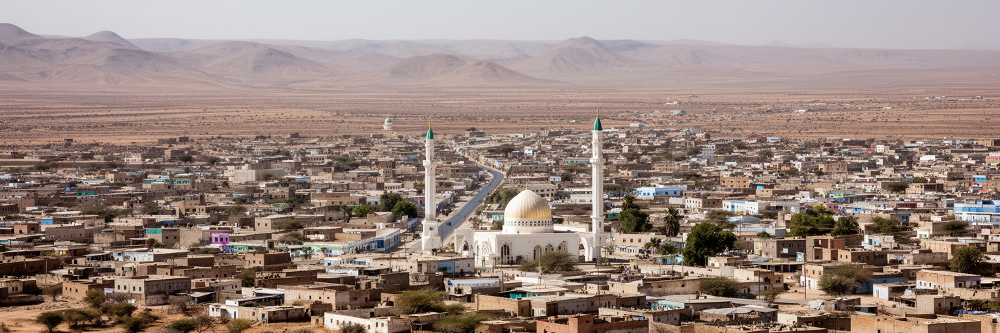
🏳️ ソマリランド / マローディ・ジェー州 / World City Atlas
アデン湾とエチオピア高原の間にある高原都市で、未承認国家の行政、牧畜交易、送金経済、戦争からの再建、イスラムの生活、ベルベラ港回廊が重なります。
都市の骨格
ハルゲイサはアデン湾岸のベルベラ港とエチオピア方面を結ぶ内陸の結節点です。乾いた高原に低層の街が広がり、政府機関、市場、送金会社、大学、茶店、周辺の避難民居住地が首都の機能を支えています。
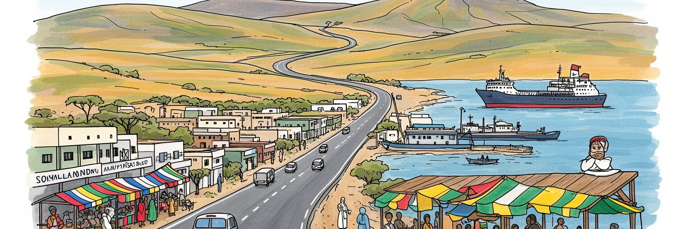
ハルゲイサはソマリランド政府の中心で、国際承認の不足と実効統治の積み重ねが同じ街路に現れます。ベルベラ港、エチオピア方面の道路、ディアスポラの送金、周辺紛争からの避難が首都性を形作り、地域秩序も映します。
行政、建設、輸入品販売、通信、送金、教育、ホテル、茶店、市場、家畜関連の商いが雇用を支えます。正規の公務と非公式な小商いが近く、若者、女性、帰還者、移民の働き口を大きく左右します。物価も負担です。
イスラムの祈り、ラマダン、氏族の交渉、詩、口承、茶店での政治談義が日常を編みます。独立戦争と空爆の記憶、ディアスポラの帰郷、教育への期待が、首都の文化的な緊張を作ります。言葉と歌声も強く残ります。
住民は市場、ミニバス、モスク、送金窓口、学校、井戸、茶店、サッカー場を使います。観光はラース・ゲール壁画、高原の眺め、市場へ向かいますが、水、住宅、雇用、粉じんは日常の負担です。安全への配慮も要ります。
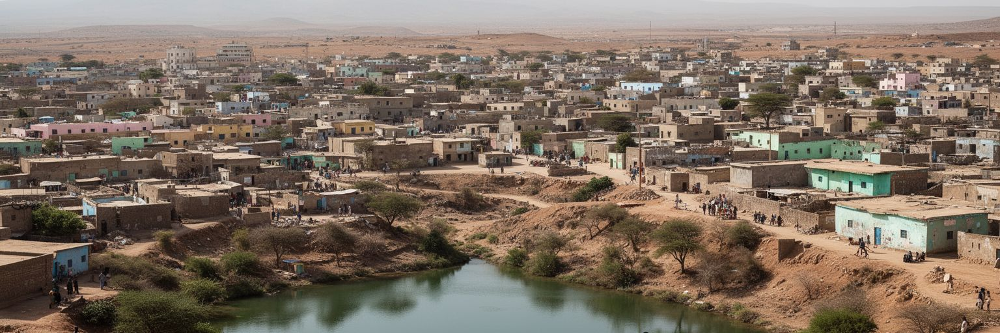
ハルゲイサはガルゴドン高地とも呼ばれるオゴ高原に位置し、標高の高さが熱帯緯度の都市に涼しさを与えています。とはいえ、都市の基礎条件は豊かな水ではなく、乾燥、季節雨、粉じん、浅い谷筋との付き合いです。雨は限られた時期に集中し、普段は乾いた河床やくぼ地が、降雨時には排水と浸水の問題を一気に表面化させます。住宅地は低層に広がり、未舗装道路、井戸、給水車、貯水タンク、屋根上の水槽が生活の風景になります。都市の拡大は中心部から周辺村落へ伸び、行政区域の外縁では土地権利、道路整備、学校、診療所、排水、廃棄物処理が追いつきにくいです。高原の眺望は開放的ですが、日陰が少ない通りでは暑さと風が歩行者や露店商の負担になります。ハルゲイサを読む時は、首都機能だけでなく、水をどう集め、運び、節約し、災害時に守るかを見る必要があります。水の管理は技術の問題であると同時に、どの地区へ先に配られ、誰が高い価格で買わされるのかという公平性の論点でもあります。乾いた高原で都市が大きくなるほど、日常の水は政治と生活の両方を映します。井戸の深さ、給水車の運賃、屋根に置くタンクの大きさは、世帯の収入差をそのまま示します。雨が少ない年には、地方の牧畜民の移動と都市の水需要も重なります。水をめぐる判断は、都市の安全網そのものになります。
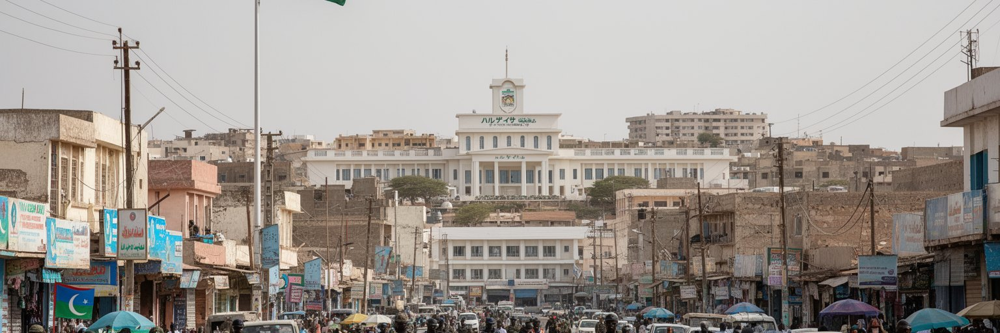
ハルゲイサの政治的重要性は、国際法上の承認不足と日々の統治実績が同時に存在する点にあります。ソマリランド政府は大統領府、議会、省庁、地方自治体、裁判、警察、選挙管理をこの都市から運営し、住民は税、許認可、学校、道路、治安、土地登記を通じて国家のような制度を経験します。一方で、多くの国はソマリランドを独立国家として承認していないため、外交、金融、航空、援助、投資、旅券、国際機関との関係には制約が残ります。街の政府庁舎や旗は主権の意思を示しますが、その主権は国連席や大使館網ではなく、選挙の運営、比較的安定した治安、ディアスポラの支援、地域交渉によって支えられています。首都であるハルゲイサは、国民国家の完成形を見せる都市ではなく、承認を待ちながら制度を積み上げる都市です。政治の話は茶店や市場でも続き、氏族間の合意、政党間競争、地方行政の予算、東部地域の紛争が日常会話に入り込みます。未承認という状態は抽象的ではありません。銀行取引、留学、輸出、旅券、保険、援助事業の手続きに現れ、住民の可能性と不安を同時に作ります。だからこそ自治体の窓口、選挙の列、道路補修の現場は、国家を名乗る力を毎日試す場所になります。制度への信頼は遠い外交会議ではなく、住民が使えるサービスから育ちます。小さな行政実務が、首都の正統性を支えます。
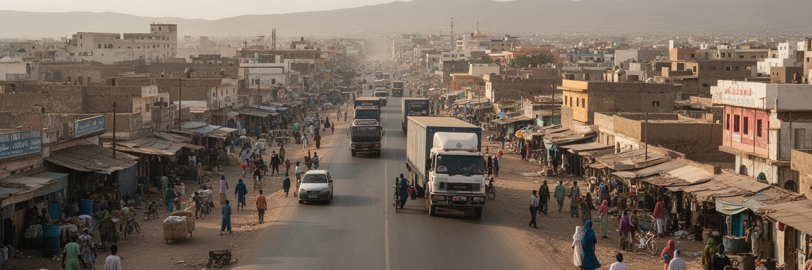
ハルゲイサは海に面していませんが、都市の経済はアデン湾のベルベラ港と深く結びついています。港から入る食料、燃料、建材、車両、家電、衣料はハルゲイサの市場や建設現場へ運ばれ、反対方向には家畜、皮革、消費需要、内陸への物流が流れます。さらに道路はエチオピア東部のジジガ、アディスアベバ方面へつながり、内陸国エチオピアが港湾アクセスを多様化しようとする動きとも接続します。物流回廊は単なる幹線道路ではありません。トラック運転手、通関業者、倉庫、給油所、修理工、茶店、両替、携帯通信、警備、道路沿いの小商いを生みます。港湾投資や道路整備は都市の成長を加速させますが、輸入品価格、土地投機、事故、粉じん、交通渋滞、沿道住民の移転も伴います。ハルゲイサの商業地区を歩くと、ベルベラ港で降ろされた品物が棚に並び、ディアスポラから届く資金が建設資材へ変わる様子が見えます。回廊の価値は、国際企業や港湾会社の収益だけでは測れません。荷を待つ労働者、道路脇の食堂、家計の買い物、家畜商の移動まで含めて、港と高原首都は一つの生活圏として動いています。道路が改善されるほど物流は速くなりますが、通過する貨物から地域住民がどれだけ雇用やサービスを得られるかが問われます。回廊は成長の道であり、分配の道でもあります。料金所や検問、燃料価格の変化も家計に響きます。
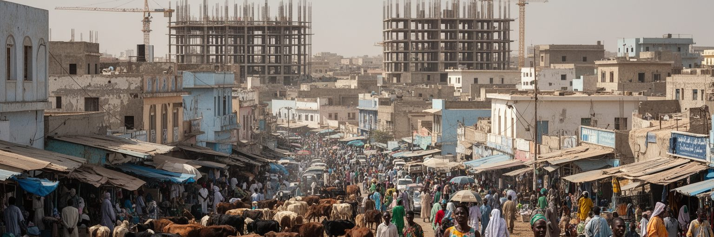
ハルゲイサの経済は、近代的なビルや通信会社だけでなく、牧畜社会と海外ディアスポラの資金に支えられています。ラクダ、ヤギ、羊、牛の取引は地方の牧畜民、仲買人、輸出業者、港湾、湾岸諸国の需要を結び、干ばつや家畜病、輸出規制が街の所得にも影響します。送金会社と携帯マネーは、国外で働く親族からの資金を家庭、学費、医療、住宅建設、小商いへ流し込みます。国際銀行網への接続が弱い環境では、送金と信頼のネットワークが都市の金融インフラになります。中心部の両替商、通信店、建設資材店、茶店、ホテルは、その資金循環の見える部分です。一方で、送金に頼る生活は外部経済や規制に左右されやすく、若者が安定した国内雇用を得にくい構造も残します。牧畜は農村の仕事に見えますが、ハルゲイサの食卓、輸出収入、交通、政治交渉、氏族間の関係に深く入り込んでいます。都市の発展を語る時、家畜市場や送金窓口を古い経済として切り捨てることはできません。それらは不確実な国家環境の中で住民が作ってきた、柔軟で強い生活金融です。ハルゲイサの商業的な活力は、正式な銀行よりも、人の信用、親族、商人の評判、携帯電話の画面に支えられています。現金、ドル、シリング、電子残高が同じ店先で扱われることも、この都市の実務的な金融感覚を示します。取引の速さは信頼の厚さに支えられます。
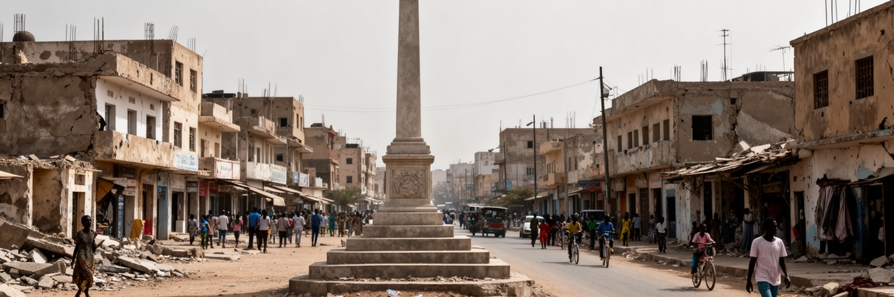
ハルゲイサを理解するには、1980年代末の破壊と、その後の再建の記憶を避けて通れません。シアド・バーレ政権とソマリ国民運動をめぐる戦争では、都市は空爆と砲撃で大きな被害を受け、多くの住民が避難し、家族と街路の記憶に深い傷が残りました。独立宣言後の再建は、巨大な国際支援だけでなく、帰還者、商人、ディアスポラ、地域長老、女性、宗教者、自治体の小さな努力で進みました。廃虚だった場所に住宅、店、学校、モスク、病院、大学が戻り、破壊された街は首都として再び機能するようになりました。戦争記憶は記念碑や博物館だけにあるのではありません。家族の語り、行方不明者、障害、土地権利、避難経験、氏族間の和解、若者が聞く昔話に残っています。再建の成功は都市の誇りですが、過去の暴力を単純な英雄物語に閉じ込めると、被害者の多様な経験や現在の政治的緊張が見えにくくなります。ハルゲイサの街路は、戦争で壊された首都が、制度と商いと日常を少しずつ取り戻した証拠です。その記憶は、治安の安定を当たり前にせず、和解と説明責任を求める感覚を住民の中に残しています。再建された建物の背後には、失われた家と戻れなかった人の影もあります。若い世代が新しい店や学校を作ることは、記憶を忘れることではなく、破壊の上に暮らしを続ける意思でもあります。
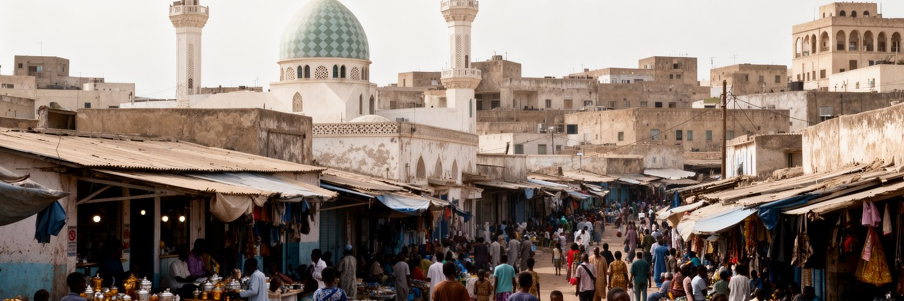
ハルゲイサの日常は、イスラムの祈り、家族、氏族、商い、詩、茶店の会話によってリズムを持ちます。モスクの呼びかけは一日の区切りを作り、金曜礼拝、ラマダン、イード、結婚式、葬儀、慈善は、都市の時間と人間関係を整えます。宗教は観光用の建築物としてだけ存在するのではなく、困った人への支援、商取引の信頼、教育、家族規範、政治的発言にも影響します。ソマリ語の詩や口承は、政治批判、愛、移住、干ばつ、戦争記憶を語る媒体であり、茶店や集会、ラジオ、SNS動画を通じて今も更新されています。街の茶店では男性たちが政治、物価、海外送金、サッカー、氏族間の噂を語り、女性は市場、家族、教育、保健、商いの場で別の情報網を作ります。都市文化は保守的な規範を持つ一方で、帰還者や若者、大学生、オンライン文化が新しい表現も持ち込みます。ハルゲイサの文化を見る時、伝統と近代を対立させるより、祈りと携帯電話、詩と政治討論、親族関係と起業が同じ日常にあることを捉える必要があります。宗教は都市を閉じるだけでなく、不確実な環境で信頼と助け合いを作る枠組みにもなっています。その枠組みの中で、女性の働き方や若者の自由をどう広げるかも重要な論点です。家庭の食卓、通学、商談、政治集会に同じ価値観が流れ込み、街は形式的な制度だけでは測れない結びつきを保っています。
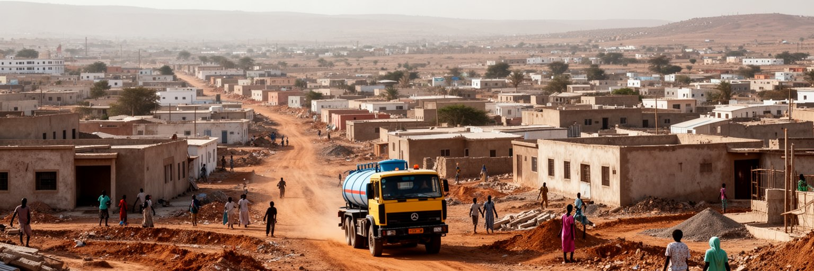
ハルゲイサの人口増加は、中心部の密度だけでなく、低層住宅地と周辺集落の広がりとして現れます。帰還者、国内避難民、地方から来た若者、ディアスポラ資金で家を建てる家族、商いを始める人々が、都市の外縁を少しずつ押し広げています。土地は家族の資産であり、将来への保険でもあるため、登記、境界、相続、売買、道路予定地をめぐる争いが起こりやすいです。住宅の多くは段階的に建てられ、最初は簡素な部屋や塀から始まり、送金や商売の収入に応じて屋根、床、店舗、追加部屋が加えられます。都市の成長は住民の努力を示しますが、公共インフラは同じ速度では伸びません。未舗装道路、排水不足、学校の遠さ、診療所不足、公共交通の限界、廃棄物処理、水の価格が生活を圧迫します。新しい地区では、夜間照明や警備、女性と子どもの移動安全も重要です。都市計画が遅れると、住民は自力で道路を開き、井戸を探し、近所の助け合いで暮らしを整えます。ハルゲイサの住宅論点は、単なる貧困ではなく、国家承認の制約、投資不足、急速な帰還と移住、土地をめぐる社会関係が重なった構造です。住まいを読むことは、首都の成長が誰の負担で進んでいるのかを読む行為です。家を建てることは家族の安全を作る一方、遠い地区ほど子どもの通学、高齢者の通院、水くみの時間が長くなります。都市の広がりは、毎日の移動時間として住民に返ってきます。
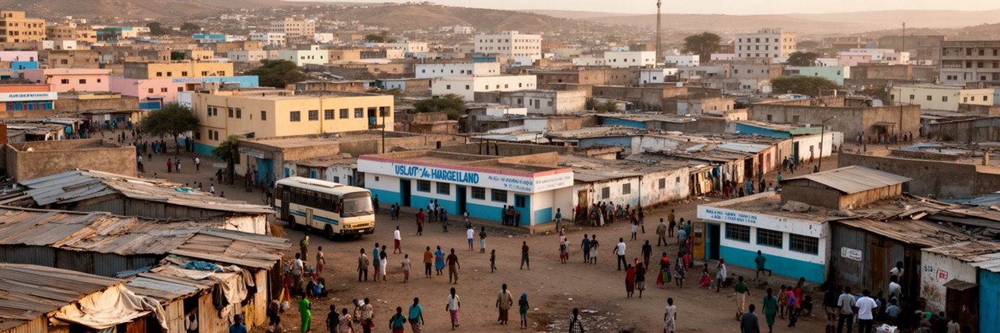
ハルゲイサは商業と行政の中心であるため、仕事を探す人、教育を求める家族、干ばつで牧畜を失った人、東部地域の紛争から逃れた人、エチオピアやイエメン方面から来る人を引き寄せます。都市は比較的安定していることで人を受け入れますが、その安定は住宅、学校、診療所、水、雇用の不足という負担も生みます。避難民居住地や周辺地区では、支援団体、自治体、宗教組織、地域長老が食料、水、保健、教育、保護を調整します。人道支援は緊急時に命を守りますが、長期化すると住民と避難者の間で土地、仕事、サービスをめぐる緊張も生じます。ハルゲイサを人道拠点として見る時、支援車両や事務所だけでなく、支援を受ける人が都市の労働市場にどう入るか、子どもが学校へ通えるか、女性が安全に水や市場へ行けるかを見なければなりません。移動する人は単なる被援助者ではなく、商い、技能、親族関係、言語、経験を都市へ持ち込みます。首都の包摂力は、彼らを一時的な例外として扱うのではなく、住民として暮らしを組み立てられる制度を作れるかで測られます。ハルゲイサの人口増加は、機会を求める移動と危機から逃れる移動が重なった結果です。その重なりが都市の活力と緊張を同時に作ります。支援が終わった後も、子どもの学籍、仕事の紹介、土地の確保が残ります。移動の経験を都市の力へ変えるには、短期支援と長期行政をつなぐ必要があります。
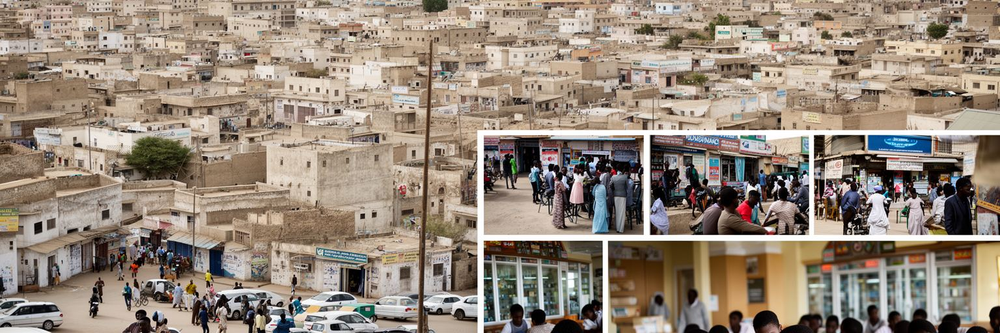
ハルゲイサでは、教育が個人の上昇だけでなく、国家づくりの重要な基盤になっています。大学、私立学校、専門学校、語学教育、医療教育、IT訓練は、行政、通信、金融、保健、建設、起業を支える人材を育てます。国際承認がない環境では、学位の通用性、留学、研究資金、オンライン教育、英語力が若者の将来を大きく左右します。家族は送金や商売の収入を学費へ振り向け、子どもが公務員、医師、技術者、事業家になることを期待します。一方で、卒業後に十分な仕事がない場合、若者は失望し、移住や非公式な商いへ向かいます。女性の教育機会は広がっていますが、家事、結婚、移動安全、就職先、社会規範が進路を制限することもあります。教育機関は知識を教えるだけでなく、政治参加、公共討論、起業、メディア、保健啓発の場にもなります。ハルゲイサの若者は、戦争を直接知らない世代として、安定を当然視しつつ、国際的な接続と自由を求めています。携帯電話とSNSは世界の情報を近づけますが、現実の就職市場は狭く、承認不足は移動の選択肢を限ります。教育が希望であり続けるには、学校の数だけでなく、技能を仕事へつなぐ制度、女性が働き続けられる環境、研究と公共政策を結ぶ仕組みが必要です。教室で学ぶ英語、会計、看護、情報技術は、家庭の期待と都市の制度づくりを結ぶ具体的な道具になります。
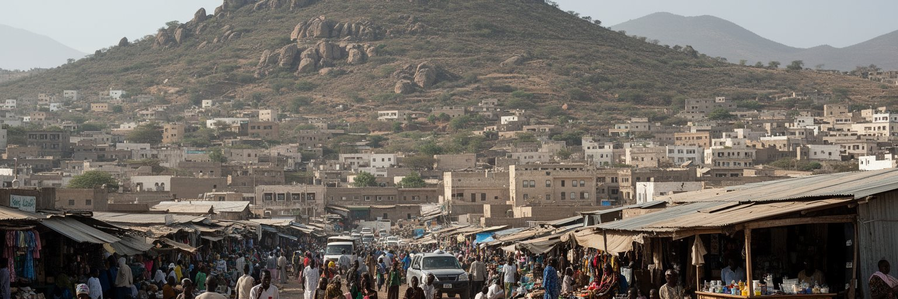
ハルゲイサ観光は、大量観光地の華やかさではなく、政治的に複雑な地域を実際に歩く経験と、周辺の文化遺産を結ぶ旅です。市街では中央市場、モスク、茶店、両替商、衣料や香辛料の店、家畜や輸入品の流れ、戦争記憶の場所、大学やホテルの新しい風景が見えます。郊外のラース・ゲール岩絵は、牛や人物を描いた先史時代の遺産として特に重要で、ソマリランドの観光資源であると同時に、保存、案内、道路、地域住民の利益配分を考える必要があります。訪問者は治安情報、許可、ガイド、服装、写真撮影、宗教的な礼節を確認しながら動くことになります。観光は外貨と雇用を生みますが、都市の暮らしを見世物にしない配慮も求められます。市場で写真を撮る時、避難民地区を訪れる時、宗教施設に近づく時には、住民の尊厳と安全を優先する必要があります。ハルゲイサの魅力は、未承認国家という珍しさだけではありません。乾いた高原で再建された街、人びとの商い、茶の香り、詩と政治、砂ぼこりの光、岩絵に残る長い人間の記憶が一つの旅程でつながることにあります。観光が持続するには、道路やホテルだけでなく、遺産を守る専門性、地域ガイドの収入、住民が誇りを持てる説明が必要です。静かな遺産と忙しい首都を一緒に見ることで、ハルゲイサの時間の厚みが見えてきます。旅の価値は珍しさではなく、住民の生活を尊重して複雑な都市を理解する姿勢にあります。
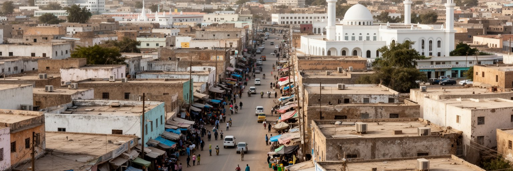
ハルゲイサは、通常の首都ランキングでは見落とされやすい都市ですが、現代世界を読むうえで重要な問いを多く抱えています。国際承認を十分に得ないまま、選挙、行政、治安、税、教育、商業を積み上げることは可能なのか。牧畜、送金、携帯マネー、港湾回廊、ディアスポラ資金は、国家制度が弱い環境でどのように都市を支えるのか。戦争で破壊された都市は、どのように記憶を抱えながら日常と商いを取り戻すのか。これらの問いが、ハルゲイサの街路、市場、政府機関、茶店、住宅地に具体的な形で現れています。都市の強さは、高層ビルの数ではなく、住民が不確実な条件の中で制度と信頼を作ってきた粘り強さにあります。一方で、水不足、急速な人口増加、若者の雇用、女性の機会、避難民の受け入れ、土地権利、周辺紛争、国際金融への制約は大きな論点です。ハルゲイサを読むことは、国家承認の有無だけで都市を判断しないことでもあります。実際に道路を使い、学校へ通い、祈り、送金を受け取り、商いをする人びとの生活から見ると、この都市は未完成でありながら確かな首都です。高原の乾いた風の中で、政治、経済、信仰、記憶、移動が重なり、世界地図の空白に近い場所で都市が自分の形を作っています。国際的な地位が曖昧でも、住民の暮らしは曖昧ではありません。そこに、都市を読む手がかりがあります。